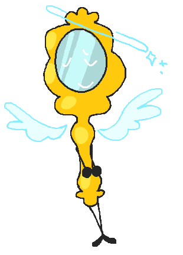

Mirror

- Alias
- Mirror
- Object
- Hand mirror
- Identity
- she/her, female
- Time in the Inbetween
- ~1,900 blooms
- Favorite food
- Chocolate dipped strawberries
- Favorite drink
- Water
- Hobbies
- Cooking, cleaning
- Favorite thing to do
- Spend time alone, prepare meals for others
- Favorite resident
- #####
Playlist
Mirror has lived in The House longer than almost anyone. She's often in the kitchen where she cleans dishes or cooks meals for the other residents. She enjoys tasks such as these, finding a calming feeling following in them. Mirror is also gentle and an introvert who listens more than she speaks. However, there is an ache beneath her surface that will never go away. It is of great loss, but she hasn't let it turn her unkind or unhelpful. Past that, she creates small drawings and doodles throughout her day.